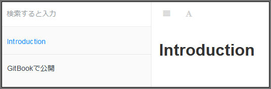

カスタマイズ
各種設定は book.json ファイルで指定します．次は日本語設定したシンプルな設定です．
{
"language": "ja"
}

タイトルや概要は title, description で指定します．
{
"title": "GitBook Tutorial",
"description": "This is a gitbook example"
}
指定しなければ，README.md の最初のヘッダ，パラグラフが使われます．
root を使用するとドキュメントの検索フォルダを変更することができます．
{
"root": "src"
}
styles で拡張スタイルシートを指定することができます．
{
"styles": {
"website": "styles/website.css",
"ebook": "styles/ebook.css",
"pdf": "styles/pdf.css",
"mobi": "styles/mobi.css",
"epub": "styles/epub.css"
}
}